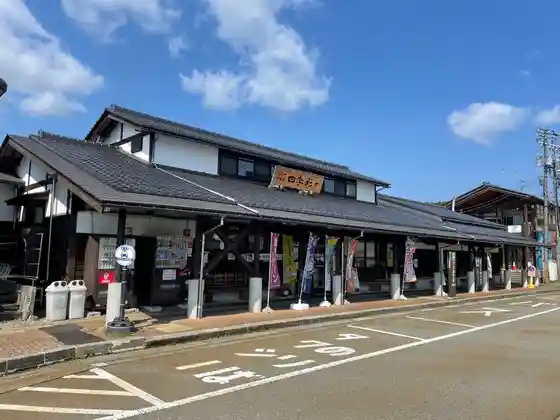
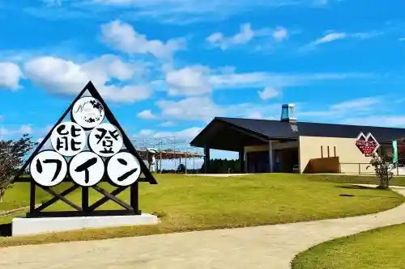
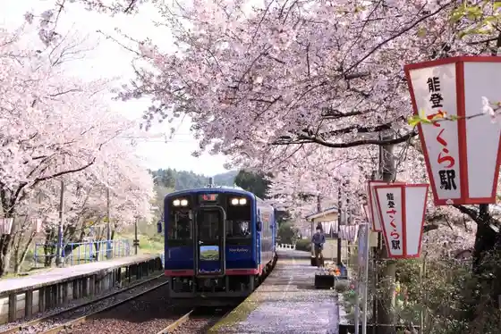
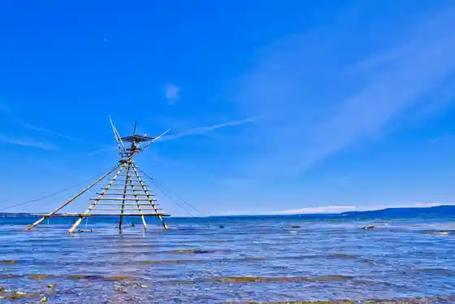

Roadside Station
Anamizu, Ishikawa · 0768-52-3333 · Official / source link

Noto Wain
Anamizu, Ishikawa · 0768-58-1577 · Official / source link

Noto Sakura Eki
Anamizu, Ishikawa · 0768-52-3790 · Official / source link

Bora Machi Yagura
Anamizu, Ishikawa · 0768-52-3790 · Official / source link

no to Tetsudo
Anamizu, Ishikawa · 0768-52-4422 · Official / source link
Anamizu Bussan Kan Shiki Saisai
Anamizu, Ishikawa · 0768-52-3333 · Official / source link
Anamizu Joshi
Anamizu, Ishikawa · 0768-52-3790 · Official / source link
no to Kiriopun Garden 2026
Anamizu, Ishikawa · 0768-26-2303 · Official / source link
Raigo Tera
Anamizu, Ishikawa · 0768-52-0709 · Official / source link
Noto Nakai Imono Kan Genzai Kyukanchu
Anamizu, Ishikawa · 0768-56-1231 · Official / source link
Mei Izumi Tera
Anamizu, Ishikawa · 0768-57-1353 · Official / source link
Noto Mae Yukitoshi Shi
Anamizu, Ishikawa · 0768-52-2114 · Official / source link
Anamizu Folk History Museum Genzai Kyukanchu
Anamizu, Ishikawa · 0768-52-2231 · Official / source link
Anamizu Wan
Anamizu, Ishikawa · 0768-52-3790 · Official / source link
Satori no Michi
Anamizu, Ishikawa · 0768-52-3790 · Official / source link
Shiosai no Michi
Anamizu, Ishikawa · 0768-52-3790 · Official / source link
Hasebe Shrine (Anamizu)
Anamizu, Ishikawa · 0768-52-3010 · Official / source link
Chi Fuku In
Anamizu, Ishikawa · 0768-56-1678 · Official / source link
Keyaki Kogei Taniguchi (Anamizu Kojo)
Anamizu, Ishikawa · 0768-52-1255 · Official / source link
no to Tetsudo Rentasaikuru Kyushichu
Anamizu, Ishikawa · 0768-52-0900 · Official / source link
Nakai Tatara Uta
Anamizu, Ishikawa · 0768-52-3790 · Official / source link
Nakai Madara Uta
Anamizu, Ishikawa · 0768-52-3790 · Official / source link
Anamizu Town Hall
Anamizu, Ishikawa · 0768-52-0300 · Official / source link